If your vision of a perfect homestead includes beautiful, durable all-weather pathways and patios, then it’s hard to beat concrete paving bricks. They’re easy to handle and require only a few tools to install, and their classic beauty is timeless. That’s good, because they can last a long, long time with minimal maintenance.
There’s also never been a better time to add brick-paved features around your property. The variety and beauty of concrete paving bricks is stunning. Designs have come a long way from the time when your only option was pink bricks, all of exactly the same size. Over the past 10 years, many different brick and stonelike products that vary in size, color and shape have appeared on the market. You can even get “tumbled brick” that offers a rustic, weathered look right out of the delivery truck.
Products, tools and techniques have been refined to the point that, with a basic understanding of brick-paving processes and the commitment to do things right, a serious do-it-yourselfer can create beautiful outdoor living spaces. Installed correctly, paving bricks last much longer than wood, without the need for chemical preservation. You can install them flush with the ground, where wood deteriorates quickly. Brick paths and patios also have no impact on forest resources. Pavements are entirely recyclable - you can even pave with reclaimed concrete sidewalk slabs (see “Working the Urban Quarry” below).
Simple concrete pavers cost less than $2 per square foot, less than half the price of clay paving brick. They’re factory-cured and almost as indestructible as granite. They’re not kiln-fired, so they don’t require the high level of manufacturing energy that goes into clay bricks. Few other masonry products can withstand years of brutal freeze/thaw cycles without crumbling, and this is one reason why mortarless brick paths and patios last so long. The other reason is the small size of each brick. If the earth beneath the installation heaves during winter and spring (and it certainly does in Canada, where I live), pavers take it all in stride. The sand-filled gaps between the bricks lend an inherent flexibility to the overall installation that prevents cracking. They also allow rainwater to drain through, unlike impermeable pavements such as poured concrete or mortared brick.
There is a catch: You must install pavers correctly to realize their full potential, and this means doing more work than initially may seem necessary. If you take shortcuts while building the foundation, the inevitable uneven settling of the bricks could turn all this potential into an ugly, labor-intensive mess.
Three elements go into an attractive, durable paver installation. First, you need a solid, mechanically compacted foundation. On top of that goes a smooth, flat layer of moist sand that serves as bedding for the pavers. The best paths also have hidden side support strips installed along all pathway edges, including curves (see diagram in Image Gallery).
If all this prep work seems unreasonable, let me convince you otherwise. Installing brick pavers isn’t easy. Cutting corners during installation won’t make the pavers any cheaper. And since gravity will always try to pull your path or patio out of alignment, it’s necessary to protect your investment with a foundation you can count on.
Footpaths age quite gracefully on top of a 6-inch-deep layer of fine, mechanically compacted crushed stone. For a driveway, or a patio that will see some vehicle traffic, you’ll need at least a 12-inch-deep compacted layer because of the extra weight involved. If your pathway ends at a driveway, consider increasing the depth of its foundation in that area. You never know when someone will drive over the end of a footpath by mistake.
The best foundation material varies according to where you live. In my region, limestone screenings are plentiful and cheap, so that’s what I use. This is a crushed stone product with the largest particles no bigger than about a quarter-inch across. Screenings also include very fine limestone dust in the mix. This ensures a rock-solid result by encouraging tight compaction. Crushed granite, limestone or sandstone might be more readily available where you live, depending on the geology of the area. Coarse, pit-run sand works, too.
Whatever you use, the purpose of the compacted base layer isn’t to get below the frost line in cold climates and prevent heaving. It would take at least a 3- or 4-foot-deep trench for that, and it’s not necessary. The real role of the foundation layer is to prevent settling and shifting of the bricks, and that’s why it must be mechanically compacted. This condition is non-negotiable. Don’t even think about installing pavers without using a powered compactor. Without exception, fresh, uncompacted fill will settle unevenly.
Plastic support edging isn’t essential for a brick pathway, but it does offer two big benefits. Besides supporting the outer bricks invisibly after backfilling, edging also makes it easy to smooth the bedding sand accurately before setting the pavers in place. This is essential for a flat surface that’s free of undulations. Some people install pavers without edging, but the benefits are so great and the cost so low (about 50 cents per foot), there’s no reason to omit it.
Estimating the amount of brick you need for a paving job is easy. Just figure out the square footage of the area you want to cover, then add 10 to 15 percent. Your brick supplier can translate those numbers in an order - it’s that simple. Often, the shape of the pavers will determine their layout pattern, but as the diagrams on the following pages show, you can create a variety of patterns using identical rectangles. Even if the pattern you choose includes several different brick shapes, the supplier will take care of all the math. Foundation fill and bedding sand are sold by the cubic yard, so just figure out the volume you need, then add an extra 20 percent for waste.
Unless your installation is tiny, and your soil sandy, you’ll probably need mechanical help excavating for the foundation. The best machine to hire for this job is a mini-excavator. These look like their full-size cousins, but are less than one-quarter the weight and are highly maneuverable in tight places. When you make arrangements for the machine and operator to work, ask if the excavator can be fitted with a toothless bucket. This is better than the standard toothed bucket, which loosens the soil at the bottom of the trench but is unable to scoop all the soil out cleanly. The best mini-excavators also have rubber tracks that won’t mar lawns or driveways.
Before you break sod, you’ll need to create obvious visual guides for the machine operator to follow. To mark straight lines, you can’t beat string tied to 12-inch spikes hammered into the earth. For curves, lay garden hose on the ground. Since the purpose of these lines is to guide the excavation, lay them 1 foot outside the final dimensions of your installation. This extra width creates a foundation space wide enough to support the all-important plastic edging and leaves some extra room to work. To determine the actual width of the finished installation for layout purposes, lay some pavers out on the ground temporarily in your chosen pattern, then measure the group. Don’t leave any gaps between bricks - a sufficient gap for sand will automatically appear. Crisp, precise bricks naturally have small sand gaps. The rounded corners and edges of tumbled brick will create wider gaps. When you’ve got your strings and hoses where you want them, follow them as a guide as you spray a swath of white or yellow paint directly on the ground. Remove the strings or hose afterward so they don’t get tangled up in the excavator.
When your excavation reaches its final depth, move foundation material into the area and rake it around, but don’t get carried away. Apply no more than a 4-inch depth of fill in any one spot before hammering it down with the compactor. If you apply more than this in one place, compaction might not penetrate all the way through the loose layer. Your completed path or patio could still settle unevenly. I recommend four passes of the compactor - two lengthwise and two across the area - to do a thorough job. Keep adding, raking and compacting material until you’re within an inch of the finished height of the foundation layer.
Now’s the time to install strings and spikes along the inside edges of the foundation, to act as a visual guide while you bring the foundation layer up to final height. Until now, your layout work has involved only the horizontal, left-and-right locations of edges. But now you also need to consider the vertical elevation of the foundation layer as it approaches its final height. This is especially important for wide installations like patios and driveways. Although the surface of the foundation doesn’t entirely dictate the final position of the pavers, it is helpful to get it as smooth and even as possible.
You’ll find it useful to get on your hands and knees at this stage, using a 24- or 48-inch carpenter’s level as a tool to smooth the final layers of aggregate as you add them with a small shovel. Keep your eye on the bubble as you work, making the installation level from side to side. If it runs next to a building, slope it slightly away to promote drainage. To do this, position the level’s bubble halfway out of the central marks and you’ll get a good drainage slope that’s also easy to walk on. Do you have a long run of pathway or a wide patio that you’d like to install flat? A laser level is an excellent tool for monitoring and adjusting the lengthwise slope of your foundation. You also could use a line level, which is a small spirit vial just like those used in a carpenter’s level that hangs from a taut string by hooks on each end (see Image Gallery).
Several brands of plastic paver edging are on the market, with more emerging all the time. Most are designed to be anchored with galvanized spikes driven into the soil. Just lay the edging down on top of your compacted base layer and drive spikes into the anchor holes.
Begin by installing edging along one side of your project, following a taut string to ensure the edging is straight where it should be. Hammer in only every third spike for now, so you’ve got some leeway to adjust the edging strips after pavers are sitting between them. You’ll have to use a measuring tape to position the edging on the opposite side of patio or driveway projects wider than 12 to 14 feet.
There’s an easier way for narrower installations such as paths. Cut a piece of 1-by-4-inch wood to the same length as the width of the group of pavers you test-fitted earlier. This is your measuring stick. Just lay it on the ground, one end tight to the already-installed edging. Lay down edging on the second side of the pathway, and bring it tight to the other end of the measuring stick before spiking it down in every third hole.
As you install the edging strips for paths, place a level across the two sides to make sure you’re maintaining an even keel. For larger projects, you’ll need to use a laser level or line level. Either way, take the time to level accurately. Leveling the edging is even more important than leveling your foundation layer. That’s because the vertical position of the plastic edging directly affects the position of the pavers. Any dip or rise in the edging creates a dip or rise in the bricks. Fine-tune the vertical position of the edging by adding or removing small amounts of fine aggregate directly underneath. Tweak, check and re-tweak until the edging on both sides is in perfect vertical alignment. This is the most finicky part of the process, but relax. Just get it right and the next step will progress quickly and easily.
It’s time to put down some clean sand, the ideal bedding material to support paving bricks. Most plastic edging is designed to accommodate a 1-inch-deep layer of sand, while still sticking up high enough to support the outer edges of pavers. When you’re dealing with installations less than 10 feet wide (and most are), the secret at this stage is a wooden tool you can make yourself. Grab a straight 2-by-4 and cut it 3 inches longer than the distance between the plastic edging strips. Notch the ends of this stick so its bottom edge nestles down between the rows of edging, about a half-inch below their tops. You’ve just made a screed, a tool that makes smoothing the bedding sand a breeze. Since it rides along the top edge of the plastic edging, you’ll find it quite easy to smooth the sand perfectly.
Shovel small amounts of sand between the plastic edging strips, level it with several passes of your notched screed, then add and smooth again until you’ve got a level layer. For best results, moisten this sand with a fine spray from a garden hose, then tamp it down with a wide, flat object (for an example, see photo of the author’s wooden tamping tool in the Image Gallery). This will lower the level of sand, so add more, smoothing and tamping again. For installations wider than about 10 feet, the maximum practical length of your screed, you’ll need to install a run of plastic edging temporarily, midway across the width. This creates a place to slide your leveling tool in two passes - one on each side of the central edging. When you’re done, remove the extra edging and fill in.
Installation of the pavers will go quickly compared to the prep work you’ve done so far. Set 5 or 6 feet of bricks along both sides of the installation, tight to the plastic edging, then tamp them in place with a few whacks from a rubber mallet. Fill the space in between with more pavers, then add more along the edges and repeat. As you work, you may find the plastic edging slightly too tight or too loose. That’s OK, because you can fine-tune its location as you add the 12-inch anchoring spikes you left out earlier. The plastic edging should end up tight to all the paving bricks.
If you’ve laid out your installation correctly, there will be little need to cut bricks. But you probably will need to cut a few as you reach the end or meet obstacles. That’s where a gas-powered masonry saw with a diamond cutting wheel really helps. Wear safety glasses, hearing protection, and heavy workboots and gloves. The best saws accept a garden hose that shoots a trickle of water directly into the cut, eliminating airborne dust. If you’re running a dry saw, a dust mask is essential. Either way, use a carpenter’s pencil to mark the cut line, start the saw, then gently lower the spinning wheel onto the brick. Let the tool do the work. Don’t force the cut. The wheel will chew through at its own rate.
Complete your work by covering the edging and the areas flanking the paving with topsoil, right up to the top face of the pavers. You may need to add more topsoil over the next few weeks as settling occurs. As soon as you’ve backfilled around the pavers, fill the narrow gaps between the paving bricks with sand. The drier the sand is, the better it will flow down into the cracks. Sprinkle sand all over the installation, then work it into the gaps between bricks using a stiff-bristled broom. Brush the sand at various angles to the seams; sweeping “with the grain” tends to clear out the seams. Next, use the compactor again and take several passes over the whole installation. This firms the pavers by nestling them further down into the bedding sand, while also jiggling the loose sand down into the cracks. You’ll probably need to apply more sand within a few days.
Finish up by seeding the area on each side of your project as soon as possible. A vigorous mat of roots does a lot to reinforce the edges of any paver installation. Finally, forget about all the installation work and take the last step: your first step out onto your new path or patio. Enjoy your successful project - it will be a valued part of your homestead for a long, long time.
Old, torn-up sidewalk slabs are usually free for the taking and make excellent paving material for paths and patios, as long as the old concrete is solid and crumble-free. They’re like urban deposits of sedimentary rock that you can quarry, shape and install instead of using store-bought paving bricks or natural stone.
The process of creating a foundation for a durable “urbancrete” surface is the same as that for ready-made paving bricks. The only difference is that you must first shape the raw paving material into a form that looks like something more elegant than old, broken concrete.
At a minimum, you’ll need a 12- to 14-pound sledgehammer to break up the larger slabs of concrete into chunks you can handle and load. A smaller, 4-pound stone hammer is useful for shaping the chunks of concrete so they fit together on your path or patio surface.
Would you like to create a regular, bricklike look using urbancrete? Using a water-cooled masonry saw with a diamond cutting wheel, you can cut the irregular slabs into whatever square and rectangular shapes you like. These smaller, precut pieces also are much easier to handle than big slabs. You can work more design elements into your project by cutting out unusual shapes or even dyeing some pieces to create contrasting colors.
|
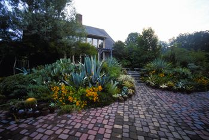 WILLIAM D. ADAMS Concrete paving bricks make durable, attractive patios and paths. Plus, they’re not kiln fired (which uses significant energy) like clay bricks and they’re recyclable. |
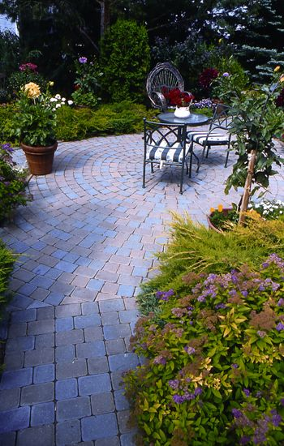 DAVID CAVAGNARO Varied patterns can create spaces for outdoor eating and contemplation. |
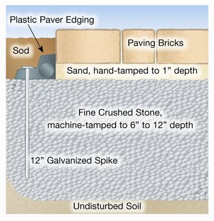 LEN CHURCHILL The best paths have hidden side support strips, including curves. |
|
MOTHER EARTH NEWS STAFF Jack-on-jack |
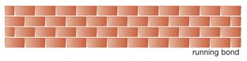 MOTHER EARTH NEWS STAFF Running bond |
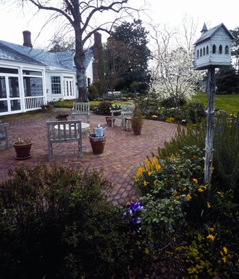 WILLIAM D. ADAMS As a last step, sweep sand into the cracks to lock the pavers in place.
|
|
MOTHER EARTH NEWS STAFF Half basketweave |
MOTHER EARTH NEWS STAFF Basketweave |
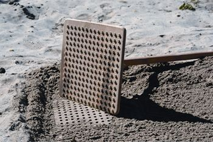 STEVE MAXWELL The author’s homemade tamper firms sand quickly. |
|
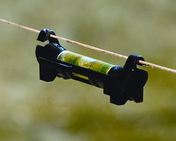 STEVE MAXWELL A line level hangs from a taut string and helps you to level wide areas accurately. |
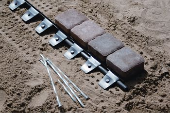 STEVE MAXWELL 12-inch galvanized spikes firmly hold plastic paver edging in place.
|
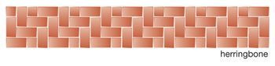 MOTHER EARTH NEWS STAFF Herringbone |
|
MOTHER EARTH NEWS STAFF Diagonal herringbone |
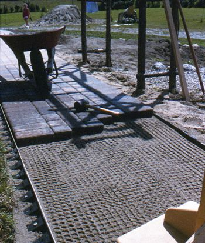 STEVE MAXWELL Paving goes faster than the prep work. |
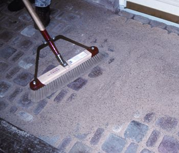 WILLIAM D. ADAMS |